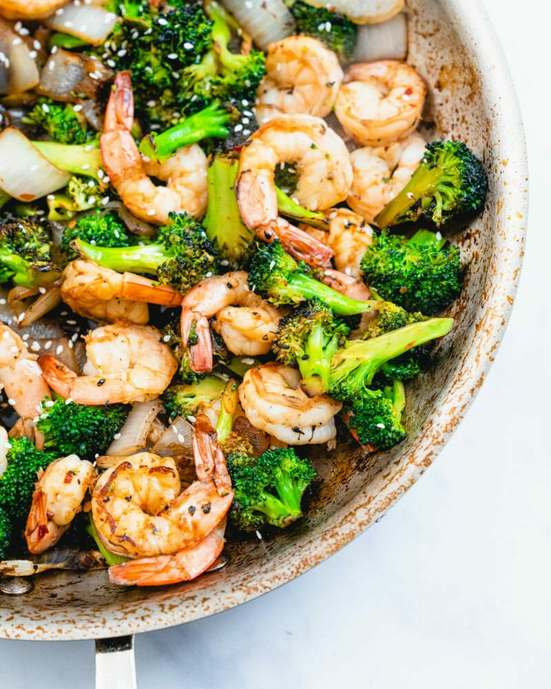

Tasty Shrimp and Broccoli Dish

This ultra flavorful shrimp and broccoli comes together in minutes for a fast and easy healthy dinner!
Serve with rice or over noodles.
Ingredients
- 1 pound large shrimp, deveined (peeled or unpeeled)
1 1/2 pounds (3 large heads) broccoli
- 1 small white onion
- 2 tablespoons rice vinegar
- 4 tablespoons soy sauce
- ½ tablespoon chili garlic sauce (optional)
- 2 tablespoons sesame oil (regular, not toasted)
- ¼ teaspoon kosher salt
- Sesame seeds, for garnish
- Thinly sliced green onion, for garnish (optional)
- To serve: rice or noodles (see notes above)
Instructions
- If frozen, thaw the shrimp according to the package instructions or the notes above.
- Chop the broccoli into small bite-sized pieces. Cut the onion into wide slices.
- In a measuring cup, stir together the rice vinegar, soy sauce, and chili garlic sauce.
- In large skillet or wok, heat the sesame oil over medium-high heat. Add the broccoli, onion and kosher salt and cook 5 to 6 minutes until fork tender, stirring occasionally. Add the shrimp and cook 3 to 4 minutes, stirring frequently.
- When the shrimp is just about opaque, add the sauce mixture and cook 1 minute. Remove from the heat. Serve with sesame seeds.